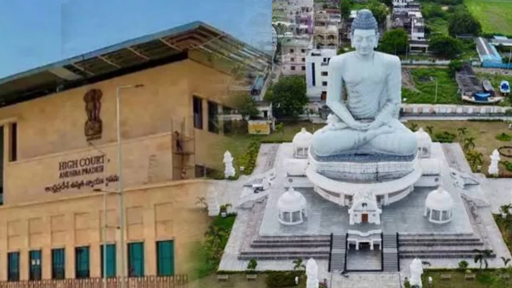

ఆంధ్రప్రదేశ్ రాజధాని అంశంలో మరో కీలక పరిణామం చోటుచేసుకుంది. రాష్ట్రంలో మూడు రాజధానుల ఏర్పాటును సవాల్ చేస్తూ గతంలో దాఖలైన పిటిషన్లపై ఆంధ్రప్రదేశ్ హైకోర్టు కీలక వ్యాఖ్యలు చేసింది. అమరావతిని ఆంధ్రప్రదేశ్ రాష్ట్ర రాజధానిగా చట్టబద్ధంగా గుర్తిస్తూ పార్లమెంట్ చట్ట సవరణ చేసిన నేపథ్యంలో.. మూడు రాజధానుల ప్రతిపాదనకు సంబంధించిన పిటిషన్లు ఇకపై ప్రయోజనం లేనివిగా మారినట్లు హైకోర్టు పేర్కొంది. ఈ పరిణామంతో ఏపీ రాజధాని వివాదంలో మరో ముఖ్యమైన న్యాయపరమైన మలుపు చోటుచేసుకున్నట్లైంది. రాజధాని విషయంలో గత కొన్నేళ్లుగా ఆంధ్రప్రదేశ్లో రాజకీయ, న్యాయపరమైన చర్చలు కొనసాగుతున్న విషయం తెలిసిందే. రాష్ట్ర విభజన తర్వాత అమరావతిని రాజధానిగా అభివృద్ధి చేసే ప్రక్రియ మొదలైంది. అయితే 2019లో ప్రభుత్వం మారిన తర్వాత మూడు రాజధానుల ప్రతిపాదన తెరపైకి వచ్చింది. విశాఖపట్నాన్ని పరిపాలనా రాజధానిగా, అమరావతిని శాసన రాజధానిగా, కర్నూలును న్యాయ రాజధానిగా అభివృద్ధి చేయాలనే ప్రతిపాదన అప్పట్లో తీసుకొచ్చారు. దీనికి సంబంధించి ప్రభుత్వం చట్టాలు కూడా చేసింది. ఈ నిర్ణయాలను సవాల్ చేస్తూ రైతులు, రాజధాని ప్రాంతానికి చెందిన వ్యక్తులు, వివిధ సంస్థలు హైకోర్టును ఆశ్రయించాయి. మూడు రాజధానుల ఏర్పాటు, రాజధాని మార్పు ప్రక్రియ, అమరావతి అభివృద్ధి వంటి అంశాలపై అనేక పిటిషన్లు దాఖలయ్యాయి. రాజధాని కోసం భూములు ఇచ్చిన రైతుల ప్రయోజనాలు, ప్రభుత్వం తీసుకున్న నిర్ణయాల చట్టబద్ధత, రాష్ట్ర ప్రభుత్వానికి రాజధాని విషయంలో ఉన్న అధికారాలు వంటి అంశాలు కూడా ఈ న్యాయపోరాటంలో భాగమయ్యాయి.

తాజాగా ఈ వ్యవహారంలో ప్రధానంగా మారిన అంశం అమరావతికి లభించిన చట్టబద్ధ గుర్తింపు. పార్లమెంట్ చట్ట సవరణ ద్వారా అమరావతికి రాష్ట్ర రాజధానిగా చట్టబద్ధ గుర్తింపు లభించిన నేపథ్యంలో మూడు రాజధానుల ప్రతిపాదనను సవాల్ చేస్తూ ఉన్న పిటిషన్లపై కోర్టు తాజా పరిస్థితిని పరిశీలించింది. మూడు రాజధానుల ఏర్పాటుకు సంబంధించిన పిటిషన్లపై విచారణ సందర్భంగా.. అమరావతి ఇప్పుడు పార్లమెంట్ చట్టం ద్వారా రాష్ట్ర రాజధానిగా గుర్తింపు పొందినందున, గతంలో మూడు రాజధానుల ప్రతిపాదనను సవాల్ చేస్తూ దాఖలైన పిటిషన్లు ప్రయోజనం లేనివిగా మారినట్లు ధర్మాసనం పేర్కొంది. దీంతో ఆ పిటిషన్లపై ఇక ప్రత్యేకంగా విచారణ కొనసాగించాల్సిన అవసరం లేదనే అభిప్రాయం వ్యక్తమైంది. ఈ కేసులో చీఫ్ జస్టిస్ లిసా గిల్ నేతృత్వంలోని ముగ్గురు న్యాయమూర్తుల ధర్మాసనం విచారణ చేపట్టింది. జస్టిస్ నైనాల జయసూర్య, జస్టిస్ బి.ఎస్. భానుమతి ధర్మాసనంలో సభ్యులుగా ఉన్నారు. అమరావతికి చట్టబద్ధ గుర్తింపు లభించిన నేపథ్యంలో ఇంకా పెండింగ్లో ఉన్న పిటిషన్లలో ఏవి ప్రయోజనం లేనివిగా మారాయో వివరాలు సమర్పించాలని కోర్టు సంబంధిత న్యాయవాదులను కోరింది. కేసులను అంశాల వారీగా వేరు చేసి పరిశీలించాలని కూడా ధర్మాసనం సూచించింది. దీనివల్ల ఇప్పటికే పరిష్కారం అవసరం లేని అంశాలను పక్కన పెట్టి, ఇంకా న్యాయపరంగా పరిశీలించాల్సిన అంశాలపై దృష్టి పెట్టే అవకాశం ఉంటుంది.
అయితే మూడు రాజధానుల పిటిషన్లు ప్రయోజనం లేనివిగా మారినంత మాత్రాన అమరావతికి సంబంధించిన అన్ని న్యాయపరమైన అంశాలు పూర్తిగా ముగిసినట్లు కాదని తాజా పరిణామాలు సూచిస్తున్నాయి. రాజధాని ప్రాంతంలో భూములు ఇచ్చిన రైతులకు సంబంధించిన అంశాలు, అభివృద్ధి పనులు, భూముల విషయంలో ప్రభుత్వం ఇచ్చిన హామీలు వంటి అంశాలు ఇంకా ప్రస్తావనలో ఉన్నాయి. రాజధాని ప్రాంత రైతుల తరఫు న్యాయవాదులు అభివృద్ధి చేసిన ప్లాట్లను ఇంకా కొంతమంది రైతులకు అప్పగించాల్సి ఉందని కోర్టు దృష్టికి తీసుకువచ్చినట్లు నివేదికలు పేర్కొన్నాయి. భూసమీకరణలో భాగంగా భూములు ఇచ్చిన రైతులకు అభివృద్ధి చేసిన ప్లాట్లు, అవసరమైన మౌలిక వసతులు కల్పించాల్సిన అంశం కూడా గతంలో న్యాయపోరాటంలో భాగమైంది. మరోవైపు రాష్ట్ర ప్రభుత్వం తరఫున అడ్వొకేట్ జనరల్ దమ్మాలపాటి శ్రీనివాస్ అమరావతిలో మౌలిక వసతుల అభివృద్ధి పనులు వేగంగా జరుగుతున్నాయని కోర్టుకు వివరించినట్లు సమాచారం. 2024 డిసెంబర్ 10న సుప్రీంకోర్టులో దాఖలు చేసిన అఫిడవిట్లో అమరావతి మౌలిక వసతుల ప్రాజెక్టులను మూడు సంవత్సరాల్లో పూర్తి చేస్తామని ప్రభుత్వం పేర్కొన్నట్లు ఆయన వివరించారు. అయితే గతంలో అమరావతి అభివృద్ధికి సంబంధించి హైకోర్టు నిర్దేశించిన కొన్ని గడువులపై సుప్రీంకోర్టు స్టే విధించింది. అందువల్ల ప్రస్తుతం పెండింగ్లో ఉన్న అంశాల్లో కోర్టు ఏ మేరకు ఆదేశాలు ఇవ్వగలదన్నది కూడా న్యాయపరంగా కీలకంగా మారింది.
అమరావతి రాజధాని అంశంపై గతంలో ఆంధ్రప్రదేశ్ హైకోర్టు 2022 మార్చి 3న కీలక తీర్పు ఇచ్చింది. అప్పటి మూడు రాజధానుల ప్రతిపాదనకు సంబంధించిన చట్టాలను సవాల్ చేస్తూ రైతులు దాఖలు చేసిన పిటిషన్లపై విచారణ అనంతరం అమరావతిని రాష్ట్ర రాజధానిగా అభివృద్ధి చేయాలని హైకోర్టు ఆదేశాలు జారీ చేసింది. ఈ తీర్పును అప్పటి ప్రభుత్వం సుప్రీంకోర్టులో సవాల్ చేసింది. ఆ అప్పీళ్లలో భాగంగా అమరావతి అభివృద్ధికి సంబంధించి హైకోర్టు విధించిన కొన్ని గడువులపై సుప్రీంకోర్టు స్టే విధించింది. ఇప్పుడు పార్లమెంట్ చట్ట సవరణ ద్వారా అమరావతికి చట్టబద్ధ గుర్తింపు లభించిన నేపథ్యంలో ఈ న్యాయపరమైన పరిణామాలు మరోసారి ప్రాధాన్యం సంతరించుకున్నాయి. ప్రస్తుత విచారణలో మిగిలిన అంశాలను వెంటనే ముందుకు తీసుకెళ్లకుండా హైకోర్టు తదుపరి విచారణను నవంబర్ 20కి వాయిదా వేసింది. సుప్రీంకోర్టులో అమరావతి అంశానికి సంబంధించిన అప్పీళ్లు సెప్టెంబర్ 29న విచారణకు వచ్చే అవకాశం ఉందని కోర్టుకు తెలియజేయడంతో ఈ నిర్ణయం తీసుకున్నట్లు నివేదికలు పేర్కొంటున్నాయి. అందువల్ల నవంబర్ 20న జరిగే తదుపరి విచారణలో అమరావతికి సంబంధించిన మిగిలిన పిటిషన్ల పరిస్థితిపై మరింత స్పష్టత వచ్చే అవకాశం ఉంది. మూడు రాజధానుల ప్రతిపాదనకు సంబంధించిన పిటిషన్లు ప్రస్తుత చట్టపరమైన పరిస్థితుల్లో ప్రయోజనం లేనివిగా మారినప్పటికీ.. రైతుల భూములు, అభివృద్ధి చేసిన ప్లాట్లు, మౌలిక వసతులు వంటి అంశాలపై ఏ విధంగా ముందుకు వెళ్లాలన్నది తదుపరి విచారణలో కీలకంగా మారనుంది.
మొత్తంగా చూస్తే.. ఆంధ్రప్రదేశ్ రాజధాని వ్యవహారంలో తాజా హైకోర్టు వ్యాఖ్యలు కీలకమైన పరిణామంగా నిలిచాయి. గతంలో మూడు రాజధానుల ప్రతిపాదన చుట్టూ సాగిన న్యాయపోరాటానికి ఇప్పుడు అమరావతికి లభించిన చట్టబద్ధ గుర్తింపు కొత్త పరిస్థితిని తీసుకొచ్చింది. అమరావతిని రాష్ట్ర రాజధానిగా పార్లమెంట్ చట్టబద్ధంగా గుర్తించిన నేపథ్యంలో మూడు రాజధానుల ఏర్పాటును సవాల్ చేస్తూ దాఖలైన పిటిషన్లు ప్రయోజనం లేనివిగా మారాయని హైకోర్టు పేర్కొంది. అదే సమయంలో రాజధాని ప్రాంతానికి సంబంధించిన మిగిలిన అంశాలను విడిగా పరిశీలించాల్సిన అవసరం ఉందని స్పష్టం చేసింది. ఇక నవంబర్ 20న జరగనున్న తదుపరి విచారణపై ఆసక్తి నెలకొంది. సుప్రీంకోర్టులో పెండింగ్లో ఉన్న అప్పీళ్ల పరిస్థితి, అమరావతి రైతులకు సంబంధించిన అంశాలు, రాజధాని మౌలిక వసతుల అభివృద్ధి వంటి అంశాలపై తదుపరి న్యాయపరమైన చర్యలు ఎలా ఉంటాయనేది ఆ విచారణ తర్వాత మరింత స్పష్టమయ్యే అవకాశం ఉంది.